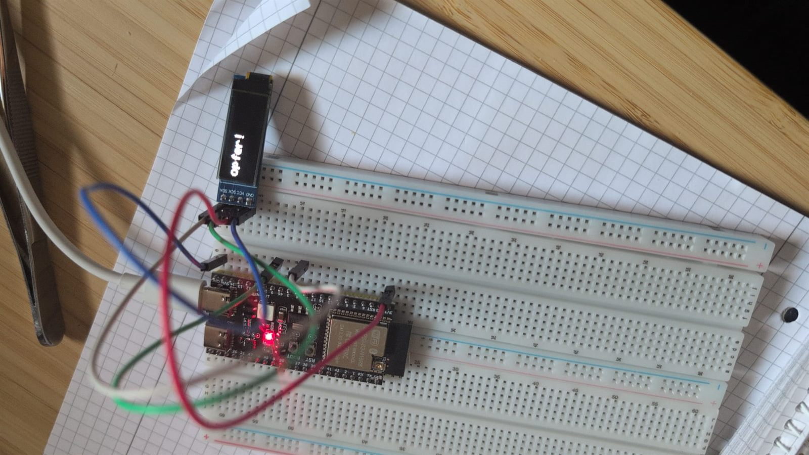
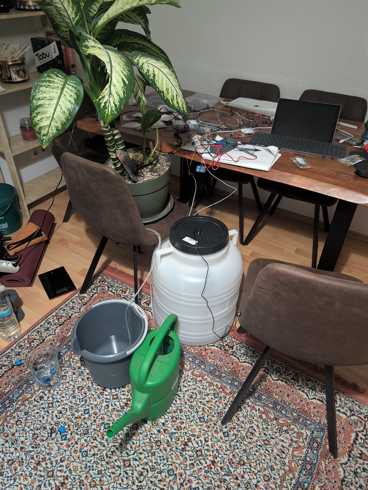
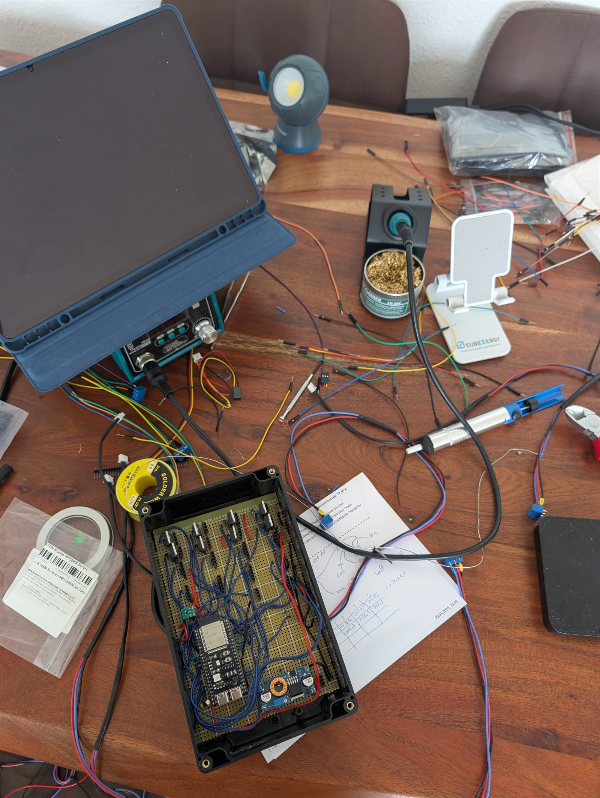
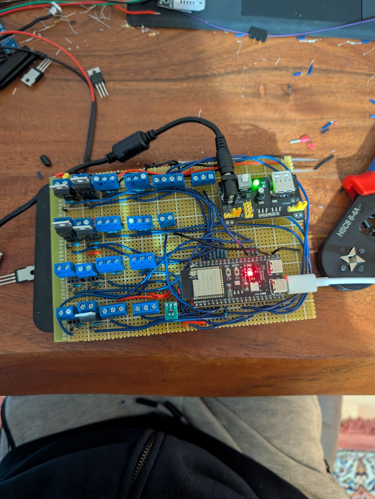
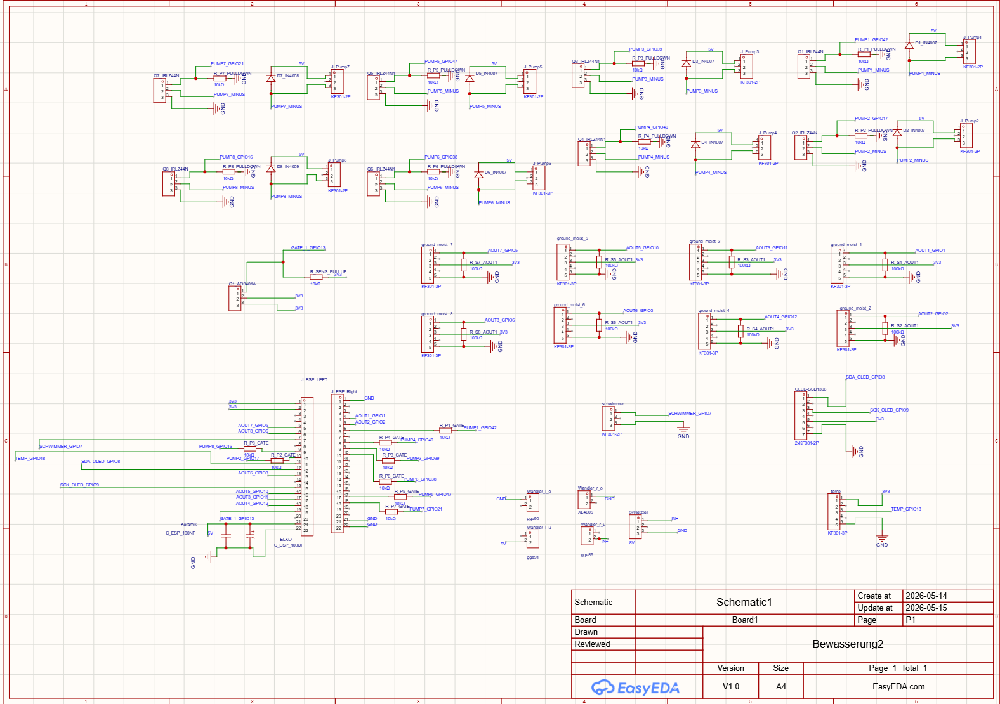
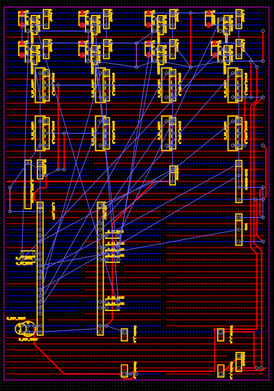
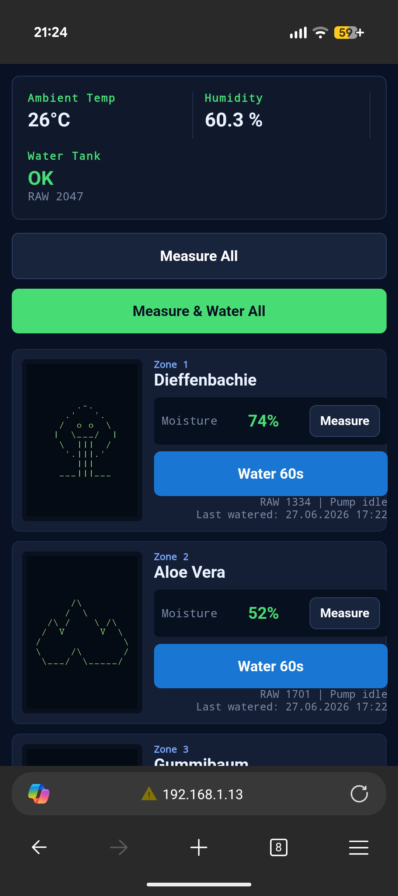
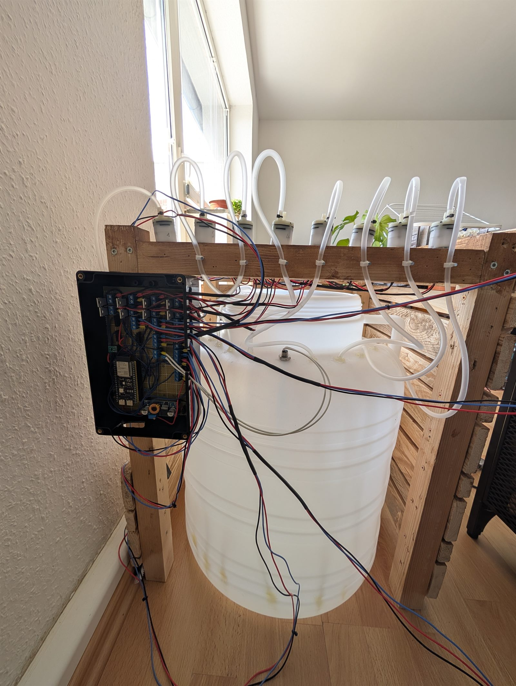
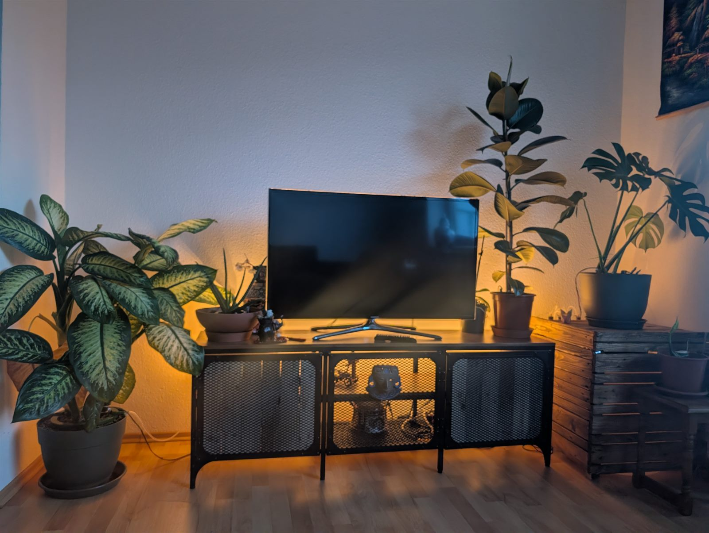

Projekt · Elektronik & Mikrocontroller
Von zu vielen Zimmerpflanzen zur selbstgebauten Bewässerungsanlage
Irgendwann standen zu viele Zimmerpflanzen in der Wohnung, und das Gießen war eine lästige Aufgabe, die man leicht vergisst. Statt einer Gießkanne sollte es etwas geben, das ich zentral steuern kann. Aus dieser Idee wurde ein Gerät aus Pumpen, Schläuchen, Feuchtesensoren, einem kleinen Mikrocontroller und einer Weboberfläche — und ein ziemlich chaotischer Lernweg mit Löten, verpolten Bauteilen, unplausiblen Messwerten und mehreren Kurswechseln.
- ESP32
- Löten
- Sensorik
- Hydraulik
- Arduino
- Debugging
- MOSFET
- Webserver
Dieses Projekt verbindet mehr Bereiche als meine bisherigen Software-Fallstudien: Hydraulik, Elektronik, einen Mikrocontroller, Löten, Programmierung, viel Fehlersuche und am Ende eine kleine Weboberfläche. Der folgende Aufbau folgt der Reihenfolge, in der die Probleme wirklich auftraten — inklusive der Stellen, an denen nichts funktionierte, Ratschläge verworfen wurden und Bauteile kaputtgingen.
1. Idee und Anforderungen
Der Auslöser war banal: mehrere Zimmerpflanzen, die alle unterschiedlich oft Wasser brauchen, und ein Gießrhythmus, den man im Alltag ständig verpasst. Eine einfache Zeitschaltuhr an einer Pumpe hätte das nicht gelöst, weil eine Aloe Vera etwas ganz anderes braucht als eine Monstera. Ich wollte etwas, das ich von einem Punkt aus steuern kann, das den Zustand jeder Pflanze einzeln kennt und das ich notfalls auch von Hand auslösen kann.
Aus diesen Wünschen wurden schon vor dem ersten Bauteil ein paar Anforderungen: pro Pflanze eine eigene Wasserversorgung, ein gemeinsamer Vorratstank, eine Messung der Bodenfeuchte und eine Bedienung, für die ich nicht am Gerät stehen muss. Damit war klar, dass das kein reines Elektronik-Basteln wird, sondern ein System aus Wasser, Strom, Software und Bedienung, bei dem jeder Teil zum anderen passen muss.
2. Planung und Einkauf
Da mir das nötige Wissen an fast allen Stellen fehlte, habe ich den theoretischen Aufbau zuerst mit ChatGPT durchgesprochen: Was steuert eigentlich eine Pumpe, wie schaltet ein Mikrocontroller etwas, das mehr Strom braucht als er selbst liefern darf, welche Sensoren gibt es für Bodenfeuchte und Wasserstand. Aus diesen Gesprächen entstand nach und nach eine Materialliste — ein ESP32-Mikrocontroller, Feuchtesensoren, kleine Pumpen, MOSFETs als Schalter, ein OLED-Display, Schläuche, Tropfer — die ich dann bei AliExpress bestellt habe.
Diese Phase war nützlich, aber nicht mehr als ein grober Rahmen. Die KI konnte mir erklären, welche Bauteil-Kategorien ich brauche und warum. Welche konkreten Teile am Ende zusammenpassen, ob die Pumpenleistung reicht und wie viele Kanäle sinnvoll sind, hat sich erst beim realen Aufbau entschieden. Die Bestellung war also eine begründete Vermutung, keine fertige Stückliste.
3. Der erste Breadboard-Prototyp
Statt gleich alles zusammenzustecken, habe ich klein angefangen: ein Breadboard — eine Steckplatine, auf der man Schaltungen ohne Löten ausprobiert — und pro Schritt genau ein neues Bauteil. Zuerst nur der ESP32 mit einem winzigen Testprogramm, dann das OLED-Display, dann ein einzelner Sensor, dann eine Pumpe über einen MOSFET.

Ein MOSFET ist dabei nichts anderes als ein elektronischer Schalter: Der ESP32 darf eine Pumpe nicht direkt versorgen, weil sie mehr Strom zieht, als seine Pins vertragen. Der Mikrocontroller schaltet deshalb nur den MOSFET, und der MOSFET schaltet die Pumpe. Genau solche Zusammenhänge habe ich hier zum ersten Mal nicht als Theorie gelesen, sondern an einem Bauteil gesehen, das entweder lief oder eben nicht. Jedes Teil wurde einzeln geprüft, bevor das nächste dazukam.
4. Wasser verteilen und dosieren
Bevor es um Automatik ging, stand eine viel unromantischere Frage im Raum: Wie kommt das Wasser überhaupt gleichmäßig in die Erde? Bei einem Topf mit 30 Zentimetern Durchmesser reicht ein einzelner Tropfpunkt nicht. Die Lösung wurde pro Pflanze eine eigene kleine Pumpe, die über einen Schlauch einen Bewässerungsring mit mehreren Tropfern speist.
An dieser Stelle habe ich zum ersten Mal einen Vorschlag aus dem Chat bewusst nicht übernommen. Theoretisch wurde mir erklärt, warum ein geschlossener Ring im Topf zu ungleichmäßiger Verteilung führen kann. Mein realer Test sah aber anders aus:
„Also bei meinem ringsystem kam das wasser unter harten bdingunfen nicht ungleichmäßig. Ich cerstehe daher das problem nicht. Es sieht auch schöner aus"
Eigene Chatnachricht während der Hydraulik-PhaseDer Ring blieb, weil er unter meinen Bedingungen nicht das Problem war. Das eigentliche Problem war die Gesamtmenge pro Zeit. Also habe ich gemessen statt geschätzt: Drei Tropfer mit je 2 l/h an einer Pumpe ergaben ungefähr 62 Milliliter pro Minute. Aus diesem Durchfluss und der gewünschten Wassermenge ließen sich dann Laufzeiten ausrechnen. Wichtig war weniger die konkrete Zahl als die Denkweise: erst den realen Aufbau messen, dann rechnen — nicht aus einer allgemeinen Tabelle heraus.
5. Sensorprobleme und Fehlversuche
Der längste und unordentlichste Teil des Projekts war die Sensorik. Hier lief über Wochen fast nichts geradlinig.
Zuerst sollte der Wasserstand im Tank per Ultraschall gemessen werden: ein Sensor oben am Fass, der den Abstand zur Wasseroberfläche misst. Auf dem Papier naheliegend, in der Praxis unbrauchbar. Der Messwert am Fass änderte sich kaum, sobald ich aber mit der Hand in den Strahl ging, sprang er sofort:
„der wert liegt am fass bei 1550. aber wenn ich den deckel abmache und den sensor gegen die wdecke halte bleibt der wert ungefährt gleich. wenn ich mit meiern hand dran gehe, fällt der wert auf 1100"
Eigene Chatnachricht bei der Wasserstands-FehlersucheDer Sensor sah also nicht zuverlässig das Wasser, sondern Reflexionen und die Geometrie des runden Fasses. Interessant war der Moment, in dem klar wurde, dass nicht die Software schuld ist:
„der minimalwert liegt bei 1100. ich glaube dein code ist falsch"
Eigene Chatnachricht — die Diagnose verschob sich hier vom Code zum MessprinzipErst meine echten Rohwerte kippten die Einschätzung. Das war ein Muster, das sich durch das ganze Projekt zog: Ohne konkrete Zahlen aus dem realen Aufbau blieben die Antworten der KI zu abstrakt. Mit Rohwerten, Fotos und Spannungsmessungen wurde der Dialog deutlich besser. Die Konsequenz war kein feiner Software-Trick, sondern ein Methodenwechsel: Der Ultraschallsensor flog raus, ein Schwimmerschalter kam rein — ein simpler Schalter, der bei genug Wasser oben schwimmt. Damit war der genaue Prozent-Füllstand weg, aber dafür gab es eine robuste Grenze zwischen „Wasser da" und „leer", und genau die braucht ein Trockenlaufschutz.
Noch härter waren die kapazitiven Bodenfeuchtesensoren. Rohwerte von null, Pins, die sich nicht logisch verhielten, Sensoren, die die Versorgung herunterzogen, und wiederholte Brownouts — kurze Spannungseinbrüche, bei denen der Chip einfach neu startet. Diese Phase war keine saubere Lernkurve, sondern eine Serie von Ausschlüssen: nur den einen ADC-Pin testen, nur einen Sensor, nur die Spannung am Ausgang, nur den MOSFET an und aus. Dazwischen passierte ein echter Fehlgriff:
„alle kabel richtig. ich habe kurz gnd und vcc vertauscht einfach zum testen. es hat bisschen geropchen, wieder vertauscht und jetzt ist der wert bei 500 +-"
Eigene Chatnachricht — eine Verpolung hatte mindestens einen Sensor beschädigtDas ist kein schöner Moment, gehört aber dazu. Ab hier war die Frage nicht mehr, wie man einen Sensor ideal anschließt, sondern was ein falscher Test bereits zerstört hatte. Und genau daraus wurde der wichtigste Lernschritt der ganzen Sensorik — der Punkt, an dem aus Ausprobieren echtes Verständnis wurde:
„wie sind sie denn gestorben wenn sie vorher funktionierten. sie hingen noch nicht in asser oder ede. nur an luft. ich will beim nächsten kauf nicht den gleichen fehler haben"
Eigene Chatnachricht — weg von der reinen Fehlersuche, hin zur vermeidbaren UrsacheAuch bei der Sensorversorgung habe ich am Ende meiner eigenen Projektlogik den Vorzug gegeben. Die KI riet zwischenzeitlich zu mehreren einzeln geschalteten Versorgungen. Für meinen Aufbau ergab das keinen Sinn, weil ich ohnehin immer alle Sensoren gemeinsam messe:
„ne, für mich sind alle gleichzeitig sinnvoll."
Eigene Chatnachricht — Entscheidung für eine gemeinsame, per MOSFET geschaltete SensorversorgungStatt den Vorschlag umzusetzen, habe ich den vorhandenen gemeinsamen Schalter einfach real getestet — Sensorversorgung aus, dann an, und die Rohwerte verglichen. Das Ergebnis war die erste eindeutig belegte Teillösung nach langer Fehlersuche: im Aus-Zustand fast null, im Ein-Zustand plausible Werte.
„es funktioniert perfekt"
Eigene Chatnachricht nach der Aus/Ein-Messreihe der Sensorversorgung
6. Verdrahtung, Löten und dauerhafter Aufbau
Ein funktionierendes Steckbrett ist noch keine Anlage. Sobald etwas dauerhaft laufen soll, reicht „es läuft irgendwie" nicht mehr — die Verbindungen dürfen sich nicht lösen, die Schaltung muss elektrisch sauber sein und sie muss wartbar bleiben. An dieser Stelle war die Hilfe der KI wieder konkret und brauchbar, weil die Aufgabe klein genug war: weg vom Breadboard, hin zur Lochrasterplatine — einer festen Platine, auf der jede Verbindung gelötet statt gesteckt ist.
Beim dauerhaften Aufbau kamen die Bauteile dazu, die eine Schaltung erst robust machen: Freilaufdioden, die die Elektronik vor Spannungsspitzen schützen, wenn eine Pumpe abschaltet; Pulldown-Widerstände und Gate-Widerstände, damit die MOSFETs beim Einschalten des Geräts einen definierten Zustand haben; Kondensatoren zur Stabilisierung; eine getrennte Versorgung für Pumpen und Mikrocontroller; und steckbare Anschlüsse, damit man einen einzelnen Kanal wieder abnehmen kann. Diese Begriffe tauchten nicht als Vokabelliste auf, sondern jeweils als Antwort auf ein konkretes Problem, das ich vorher gesehen hatte — Resets, instabile Zustände, unkontrolliertes Schalten beim Booten.

Sauber war das nicht auf Anhieb. Einzelne Kanäle mussten nachgearbeitet werden, weil eine Lötstelle nicht hielt oder eine Verbindung falsch saß. Am Ende stand aber eine feste Platine mit acht Pumpen-Anschlüssen, geschalteter Sensorversorgung, Spannungsregelung und steckbaren Klemmen für Pumpen und Sensoren.

Erst nachdem alles verlötet war, habe ich den Aufbau in EasyEDA nachgezeichnet — als Schaltplan und als Platinenlayout. Das war bewusst der letzte Schritt und nicht der erste: Es ging nicht darum, vorher am Rechner zu planen, sondern den real gebauten Zustand im Nachhinein sauber zu dokumentieren.


7. Steuerung und Weboberfläche
Mit der stabilen Platine verschob sich die Arbeit auf das Zusammenwachsen zum Gesamtsystem: das OLED für einen schnellen Blick vor Ort, ein DHT22 für Temperatur und Luftfeuchte, der Wasserstand, die Bodenfeuchte, die Pumpensteuerung und eine Bedienung, für die man nicht am Gerät stehen muss. Der ESP32 spannt dafür einen kleinen Webserver im WLAN auf, den ich vom Handy oder Laptop aus erreiche.
Auch das lief nicht sauber linear. An einer Stelle sollte der gelieferte Code angeblich schon fertige Anpassungen der Oberfläche enthalten, die ich schlicht nicht fand:
„willst du mich verarschen? wo ist das alles?"
Eigene Chatnachricht in der IntegrationsphaseKein dekorativer Ausraster, sondern eine ehrliche Stelle: Wenn Codebausteine, Erklärungen und der tatsächliche Stand auseinanderlaufen, wird aus Hilfe schnell Reibung. Wie schon bei der Sensorik half die KI auch hier am besten, wenn der Fehler eng begrenzt war — erst nur das OLED, dann OLED plus DHT, dann ein USB-Problem auf der Platine isolieren, dann prüfen, ob ein bestimmter Pin überhaupt als Pumpen-Ausgang taugt. Für jeden dieser Schritte musste ich selbst nachliefern: Screenshots, Spannungen, Rohwerte, konkrete Pins, den aktuellen Code.

Die Oberfläche ist mehr als eine rohe Datenausgabe. Sie hat drei Statusfelder für Temperatur, Luftfeuchte und Wassertank, zwei globale Buttons („Measure All" und „Measure & Water All") und darunter für jede Pflanze eine eigene Karte — mit kleiner ASCII-Grafik, Zonenname, Feuchte in Prozent, Rohwert, Pumpenstatus, dem letzten Gießzeitpunkt und Buttons zum einzelnen Messen oder Gießen. Die manuelle Pumpe hat eine eigene Karte. Die Seite aktualisiert sich alle drei Sekunden selbst. Jede Karte entspricht einer echten Pflanze, die fest einer Pumpe und einem Sensor zugeordnet ist.
8. Sicherheitsentscheidungen
Ein Gerät, das Pumpen schaltet und dauerhaft am Strom hängt, wirft eine berechtigte Frage auf: Was passiert im Fehlerfall? Genau diese Skepsis gehört in die Geschichte, weil sie den Unterschied zwischen „läuft gerade" und „ist dauerhaft vertrauenswürdig" markiert. Aus ihr wurden mehrere bewusste Entscheidungen, die im Code des Endsystems auch tatsächlich stehen:
- Pumpen starten immer aus. Beim Hochfahren werden alle Pumpen-Ausgänge zuerst auf „aus" gesetzt, damit ein Reset nicht ungewollt eine Pumpe startet.
- Feste Laufzeitgrenze. Jeder Gießvorgang dauert exakt 60 Sekunden und wird danach automatisch beendet. Eine Pumpe kann nicht unbemerkt weiterlaufen.
- Höchstens zwei Pumpen gleichzeitig. Gießaufträge laufen über eine Warteschlange; es sind nie mehr als zwei Pumpen parallel aktiv, mit etwas Abstand zwischen zwei Starts.
- Wasserstand prüfen. Der Tank wird als „OK" oder „leer" bewertet, damit nicht ins Leere gepumpt wird.
- Getrennte Versorgung mit zusätzlichem Schalter. Die Pumpen hängen an einer eigenen 5-Volt-Versorgung, die sich zusätzlich über eine Hue-Steckdose ganz vom Strom nehmen lässt — eine physische Ebene über der Software.
Bemerkenswert ist auch, was das System nicht tut: Es gießt standardmäßig nicht von allein. Im Code ist eine automatische Schwellenlogik zwar vorbereitet, aber deaktiviert. „Measure & Water All" misst im aktuellen Stand nur und startet noch keine automatische Bewässerung. Das ist eine bewusste, konservative Einstellung — lieber ein Werkzeug, das ich gezielt auslöse, als eine Automatik, der ich noch nicht traue.

9. Das fertige System
Der Endstand ist kein vollautomatisches Wundergerät, sondern eine konkret bedienbare Anlage mit klaren Grenzen. Gesteuert wird sie von einem ESP32-S3 mit WLAN-Weboberfläche und OLED-Anzeige. Auf der Platine sind acht Pumpen-Ausgänge und acht Bodenfeuchte-Kanäle angelegt; fest eingebunden sind davon fünf Pflanzen — Dieffenbachie, Aloe Vera, Gummibaum, Monstera und Efeutute — jede mit ihrer eigenen Pumpe und ihrem eigenen Sensor. Dazu kommt eine manuell auslösbare Pumpe als Override. Zwei der acht Sensorkanäle sind am Ende außen vor geblieben; der Aufbau ist also keine generische Acht-Zonen-Steuerung, sondern auf diesen realen Pflanzenbestand zugeschnitten.
Gemessen wird nicht ständig alles: Temperatur und Luftfeuchte werden regelmäßig aktualisiert, der Wasserstand ebenfalls. Die Bodenfeuchte dagegen wird nur auf Anforderung gemessen — die Sensoren bekommen über einen MOSFET erst kurz vor der Messung Strom, stabilisieren sich ein paar Sekunden, werden dann über viele Einzelmessungen gemittelt und danach wieder abgeschaltet. Das schont die kapazitiven Sensoren, deren Empfindlichkeit ich in der Fehlersuche schmerzhaft kennengelernt hatte. Die Rohwerte werden über hinterlegte Eichwerte für „trocken" und „nass" in Prozent umgerechnet.
Was das System heute wirklich kann: den Zustand jeder der fünf Pflanzen einzeln anzeigen, auf Knopfdruck messen, gezielt eine Pflanze oder alle auf einmal 60 Sekunden gießen, eine manuelle Pumpe schalten und festhalten, wann zuletzt gegossen wurde. Was es bewusst nicht kann: von allein entscheiden, wann gegossen wird. Und offen bleibt der Weg von der binären Tank-Anzeige zurück zu einem echten Füllstand sowie die Frage, ob die vorbereitete Automatik später mit belastbaren Schwellenwerten scharf geschaltet wird.

Was ich dabei gelernt habe
Rückblickend war der wertvollste Teil nicht das fertige Gerät, sondern das Vorgehen, das sich in jeder Phase wiederholte: ein Problem in den kleinsten prüfbaren Schritt zerlegen, ein Bauteil oder eine Annahme isoliert testen, messen statt raten und Ratschläge — auch die der KI — an realen Werten scheitern lassen oder bestätigen. Hydraulik, Löten, Fehlersuche mit dem Multimeter, Sensor-Kalibrierung und die Zustandslogik der Pumpensteuerung habe ich nicht als Theorie gelernt, sondern jeweils an der Stelle, an der die bisherige Annahme nicht mehr trug. Genau die Stellen, an denen es unordentlich wurde, waren die, an denen ich am meisten verstanden habe.